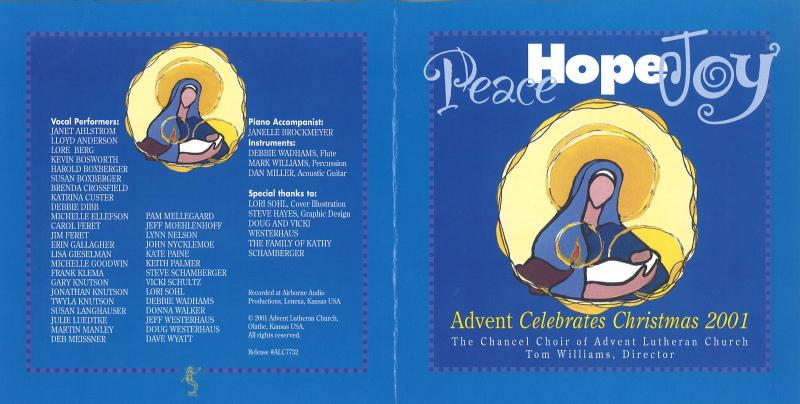
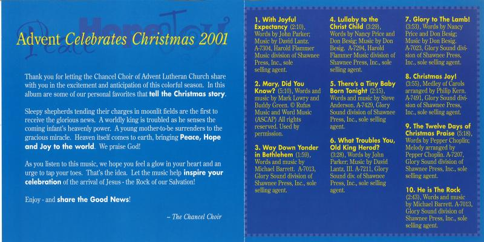
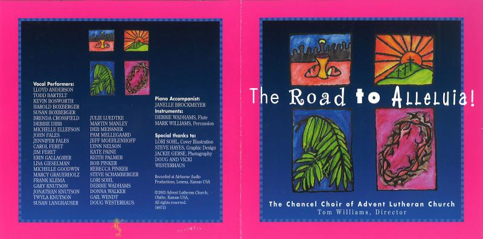
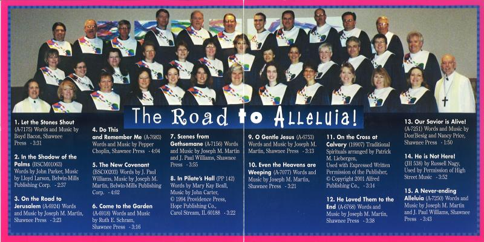
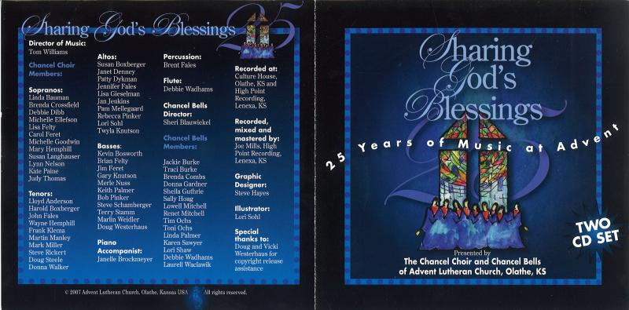
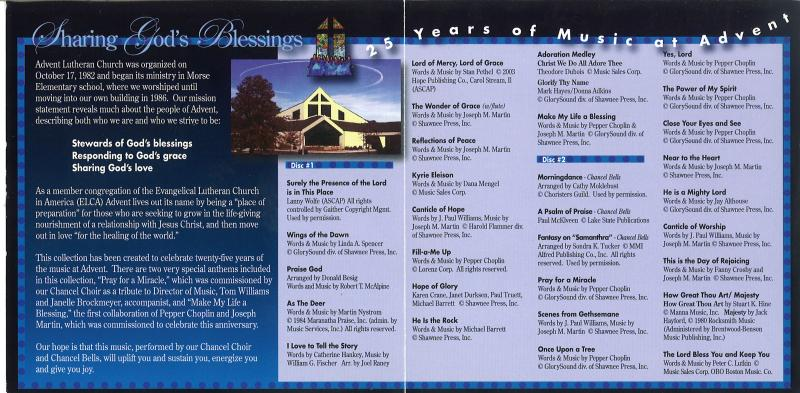

Martin Manley: My Life and Death
Born 8-15-53, Died 8-15-13 , Age 60
- Home Page
- January 1, 2012
- June 11, 2012
- Suicide Preface
- Why Suicide?
- Why not?
- Why Age 60?
- Self-Serving?
- Suicide - How 2
- Gun Control
- Other Suicides
- Other Quotes
- ------------------------------------
- Growing Up
- OMG: I look 60!
- Mom and Dad
- The Heavens
- My Religion
- Chancel Choir
- Victory O Lord
- The Proposal
- Two Marriages
- First Two Loves
- Pictures
- Trips and Travel
- Writing Fiction
- Music & Poetry
- Movies & TV
- Health
- Sleep Deprived
- Living Donor
- Food & Drink
- Creations
- Sports
- KC Star
- KC Tornado
- My IQ
- Synesthesia
- Poker
- Legal
- JOCO, Ks.
- U.S. Financial
- 911 & Conspiracies
- COOL STUFF
- Births & Deaths
CHANCEL Choir
As I’ve mentioned elsewhere on this blog, I’ve been a singer all my life. But my only real experience in recording anything was when I was a senior in high school in 1971 and I was selected to the KMEA State Choir in Wichita. We made a record, but I wasn’t able to get a copy because it cost $5 or whatever it was at the time – and we were poor.
Though I’m pretty sure my best days as a singer were before I was 47 years old, that’s when I joined the Chancel Choir at Advent Lutheran Church in Olathe, Kansas. The year was 2000 and it coincided with the opening of our new sanctuary.
Tom Williams is one of my heroes in life and he works tirelessly to run the music program for the church. He’s also the choir director. The choir has around 35 members on average from year to year. The average age is probably 50 and we may average 25-27 singers for any given Sunday performance – factoring in the many other responsibilities people have.
I’ve always thought our choir was exceptionally good. I’m 100% positive I’m biased, but there are other pieces of evidence – which include the praises of non members. It’s been a joy to be part of it all these years. We also produced three CDs (see below). I doubt if anyone will read this and order copies, but I think they can still be had. Just go to Advent’s website and pick up the phone or send an email.
I sang in choir in high school and I sang bass. I was recruited to sing in Advent’s Chancel Choir by a tenor (Lloyd) and so I sang tenor for around nine years. I never really liked the tenor part, although the range wasn’t a problem. It was just not as easy for me to find the notes as it was the bass part. Plus, the other problem was that during all those years – or at least most of them - the tenors weren’t really in one spot. We had a couple on the front row, a couple on the second row and several in the third row. I sat in the front row and most of the tenors around me were weak singers - good singers, but they didn’t have strong voices. The other parts around me were more dominant and I had to overcome them to learn my part. I have a pretty strong voice, but I really didn’t feel like I could sing tenor with much confidence compared to how I later felt singing bass.
About four years ago, I switched to bass and loved it. It’s really where I wish I had been all those years. The other advantage is that the basses are on the end and I was on the end of the basses – meaning about all I could hear were other basses and almost all of them have strong voices. I was in a far better place to simply sing my part. Besides, although the range of a tenor was doable, the older I got the more I didn’t enjoy straining my voice for long periods of time singing higher notes. Thus, the move to bass enabled me to really enjoy my final years in the choir.
I never liked using anymore brain cells than absolutely necessary and so I was always disappointed when we had to learn new music. Of course, once we learned it and added yet another song to our repertoire, I was glad we did it. So, it was kind of a catch-22.
Every so often Tom would introduce a new piece and we would collectively dislike it enough that we would find a way to get him to forget about it. On several occasions, someone would yell out something to the effect of “I’ve got $20 to ban this piece of music.” Someone else would yell out “I’ve got $20.”, and so forth. Ok, maybe the "someone" was most often me. I can remember Tom collecting a couple hundred bucks for the choir fund just to avoid having to learn a particular song. He missed the boat, however. He should have intentionally tried to make us learn some really bad songs just to raise money.
Ultimately, over my 13 years in the choir, we learned and sang at least 100 songs and possibly as many as 150. In the last couple years, we have gravitated toward re-singing many of those we already know - or at least knew. I always felt that unless it was a song we sang all the time - and there were only a handful of those - that the congregation wouldn't mind us singing songs we had sung in the past for the simple reason that 1) they may not have worshipped at Advent when we last sang it, 2) they may not have been at that service and 3) who can remember one song years before? Thus, the last couple years were the best years of all for me and my tiring brain.
A reasonably big part of why I opted for suicide was in watching a member of our choir (who was about my age) deteriorate before our eyes. Frank was/is a good guy, but over a period of half dozen years, his brain abandoned him and he couldn't function on his own. It was pathetic. Eventually, he ended up in a nursing home when he was younger than me. I knew as I watched Frank that I would be him someday and I also knew that I would never let that happen in a million years! As I got closer and closer to becoming Frankish, I realized my day was near. So, although there were many reasons that led me to this decision, none individually was bigger than seeing what happened to Frank. Poor guy!
Over the years we took a number of trips to churches in the Kansas City area and even a few several hours away in Kansas. It was always a joy to be able to share the gift of song with other congregations even if it was time-consuming.
Tom developed a new liturgy for our church. It’s called Service of Joy and has a much more modern feel. I never belonged to, or even attended, a Lutheran church before 1998 when I moved to Overland Park, Kansas. I went because my wife-to-be (Teri) had been raised Lutheran and she attended the church. I never felt all that super comfortable with the Lutheran liturgy. I think that’s something you are either raised with or it takes some getting used to. Certainly by 2013, I was comfortable, but most of the reason was the Service of Joy.
Tom introduced SOJ to the congregation around 2003. It seems much more applicable to this day and age than the old liturgies. Though it is more modern, SOJ doesn’t in any way, omit the critical aspects of the Lutheran liturgy. It’s just more melodic – a big big plus in my opinion. I can’t imagine for the life of me why other churches would not adopt it for their worship services. But, it's pretty much a fact nowadays that all churches are different.
I lived in Florida for two months in the summer of 2004. When I was there, I went to a different Lutheran church every Sunday. What amazed me was how diverse they were. They had similarities to be sure, but that’s like saying a brother and sister have similarities. They also have major differences. So, although SOJ has great potential, who can say what will happen with it outside of Advent?
More than simply singing in the choir, was the fact that being involved brought me back to my Christian roots. I was born and raised in a Christian household and I was part of a number of different religious groups until around the age of 30. Then, for about 15 years, I wasn’t involved in any organized religion. When I moved to Overland Park, Kansas at the age of 45, I started going to Advent and never regretted the decision.
The value of a church depends upon how comfortable it makes a person feel. There are so many options today, it’s difficult to know what people want and what they don’t. About all any church can do is try to stay true to itself and hope that it has a formula that works for others. I always felt that our choir was a big part of what people in the congregation appreciated about Advent. I’m sorry I won’t be part of it in the future, but it will continue on as strong as ever, at least until everyone else starts getting old – and that’s not that far away for a lot of them.
Advent is buried deep in the suburbs of Johnson County, Kansas. JOCO is part of the metropolitan area for Kansas City. When the church began 30+ years ago, it was young and in a rapidly growing area. The population around Advent has become much more stabilized by now and Advent, as well as the choir, will need to be as current and relevant as it can be to attract new members. Personally, I think SOJ, as well as the kind of music the choir sings, are both strong reasons for others to worship there – and if they sing, participate in the choir.
Our choir took great pleasure in focusing on two primary composers. Naturally, we sang songs from dozens of composers over the years, but there were two that we felt exceptionally strong about – Joe Martin and Pepper Choplin.
I would classify both of them as musical geniuses. They have each visited our church on more than one occasion and we became as close to them as one can be for a composer halfway across the country. Neither are Lutheran, but so what? Their music is generic and applicable for any Christian service. There are a number of songs by each on our three CDs (see below).
There isn’t a great deal more to say about my experiences in the choir. I love Tom and Janelle (our pianist) and the people that make up the choir. I’m proud to be able to say I was part of such a wonderful group for 13 years.
Seymour
PEACE HOPE JOY (2001)


THE ROAD TO ALLELUIA! (2003)


SHARING GOD'S BLESSINGS (2007)


Copyright 2013 Martin Manley Life and Death. All rights reserved.